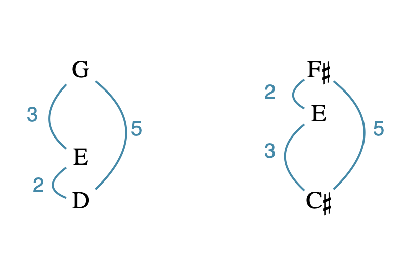
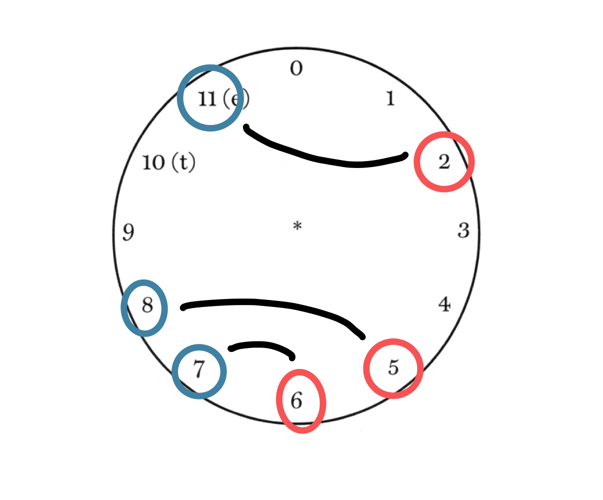
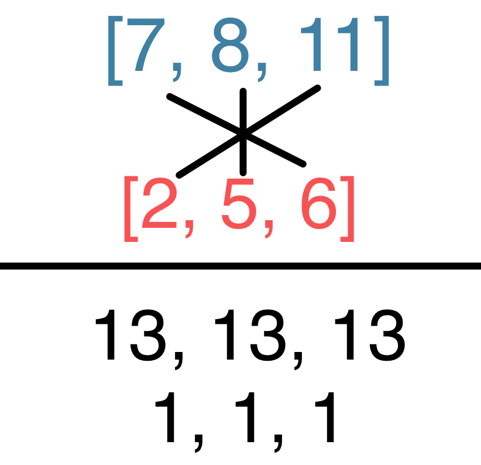

Open Music Theory：繁體中文版
音高類集合、標準排序與變換
查看英文原文
Key Takeaways
- A pitch-class set (pc set) is a group of pitch classes.
- The standard way of naming a pitch class set is by its normal order: the smallest possible arrangement of pitch classes, in ascending order.
- To transpose a set (Tn), add n to each integer of the set.
- To invert a set (In), first invert the set (take each integer's complement mod 12), then transpose by n. Alternately, subtract each integer of the set from n (n–x=y).
- The clock face may help you perform any of these tasks.
把一組音高類視為一個單位時，就稱為音高類集合，常縮寫為pc set。任何一組音高類，都可以構成音高類集合。
查看英文原文
Pitch-Class Sets
When we talk about a group of pitch classes as a unit, we call that group a pitch-class set, often abbreviated "pc set." Any group of pitch classes can be a pitch-class set.
標準排序是將一組音高類依上行方向，排列得最緊密的方式。這個概念與和弦原位有相似之處：原位是排列三和弦及七和弦音高類的標準方式，方便分類與比較。標準排序也有相同用途，但更一般化，能用於包含各種音與音程的和弦。
以下分別介紹求標準排序的計算方法與視覺方法。
查看英文原文
Normal Order
Normal order is the most compressed way to write a given collection of pitch classes, in ascending order. Normal order has a lot in common with the concept of root position. Root position is a standard way to order the pitch classes of triads and seventh chords so that we can classify and compare them easily. Normal order does the same, but in a more generalized way so as to apply to chords containing a variety of notes and intervals.
Following are a mathematical and a visual method for determining normal order.
計算方法
| 步驟 | 範例集合： G♯4、A2、D♯3、A4 |
|---|---|
| 1. 改寫為音高類，刪除重複音，並排成若依上行方向演奏，能容納於一個八度內的次序。可能的起點不只一種。 | 8,9,3 |
| 2. 在尾端再寫一次第一個音高類。 | 8,9,3,8 |
| 3. 找出相鄰音高類之間，最大的有序音高類音程。 | 8到9：1 9到3：6 3到8：5 9到3的間距最大。 |
| 4. 從最大間距右側的音高類開始重排，並以方括號寫出答案。 | [3,8,9] |
第三步的最大間距有時會並列。這時要比較候選排序在一側的緊密程度；原文接著說，若仍並列，就選低音端較緊密的排序。實際採用哪一套並列判準，請見下方譯註。
譯註來源：Mount Allison University：Normal form, prime form, and packing、Music Theory for the 21st-Century Classroom：Normal Form
查看英文原文
Mathematical method
| Process | Example set: G♯4, A2, D♯3, A4 |
|---|---|
| 1. Write as a collection of pitch classes (eliminating duplicates) such that they would fit within a single octave if played in ascending order. There are multiple possible options. | 8,9,3 |
| 2.Duplicate the first pitch class at the end. | 8,9,3,8 |
| 3. Find the largest ordered pitch-class interval between adjacent pitch classes. | 8 to 9: 1 9 to 3: 6 3 to 8: 5 9 to 3 is the biggest interval. |
| 4. Rewrite the collection beginning with the pitch class to the right of the largest interval and write your answer in square brackets. | [3,8,9] |
Occasionally you’ll have a a tie for largest interval in step 3. In these cases, the ordering that is most closely packed to one side or the other is the normal form. If there is still a tie, choose the set most closely packed to the bottom.
視覺方法：鐘面法
如果不喜歡上面的計算流程，例1的影片會清楚示範，如何利用鐘面快速找出標準排序。
例1。使用鐘面找標準排序。在GMU CourseMedia開啟
查看英文原文
Visual method (clock face method)
If you don't like the process described above, the video in Example 1 clearly explains how to use the clock face to quickly find normal order.
Example 1. Using the clock face to find normal form. Open on GMU CourseMedia
後調性音樂中的移位，常帶有移動的聽感：一個和弦、動機或旋律被移位時，就像朝某個方向移動。在德布西《沉沒的教堂》兩個不相連的片段中，開頭動機〈D, E, B〉，即〈2, 4, 11〉，於第18小節上移四個半音，成為〈F♯, G♯, D♯〉，即〈6, 8, 3〉；兩者在例2中以藍色標示，表現教堂緩緩升出水面的景象。聽到第18小節時，我們能辨認它與第1小節的關係，因為相同的有序音程重新出現，只是從另一個音高開始。移位既保留音程內容，也保留音程的具體排列。
- 藍色開頭〈2,4,11〉的標準排序為[11,2,4]；
- 兩條T₄箭頭分別指向第18小節藍色〈6,8,3〉及紅色〈8,6,3〉，兩者標準排序同為[3,6,8]。
尖括號保留出現順序，方括號表示標準排序。
- 8va＝高八度演奏；
- pp很弱、p弱；
- marqué＝突出、強調。
上方與下方是第1小節及第18小節起的非連續摘錄。
例2。動機的移位：保留順序與不保留順序的情況。
從第18小節到第19小節，同一動機以較不明顯的方式延續，在例2中以紅色標示。這裡被移位的是無序的音高類集合，不是先前那個有序集合。它看起來可能不像前兩個動機那麼明顯地移位，但只要把音高類改排為標準排序，移位的音程關係就清楚了。
移位常記為Tn；其中n稱為變換的索引數，表示兩個集合之間的有序音高類移位距離。移位可以是一種操作，也就是對音高、音高類或其集合做某件事；也可以是一種量測，表示它們之間的距離。
查看英文原文
Transposition
In post-tonal music, transposition is often associated with motion: take a chord, motive, melody, and when it is transposed, the aural effect is of moving that chord, motive, or melody in some direction. In two disconnected passages from Claude Debussy’s La cathédrale engloutie, the opening motive <D, E, B> or <2, 4, 11> is transposed four semitones higher to <F♯, G♯, D♯> or <6, 8, 3> in m. 18 (both in blue in Example 2), representing the cathedral’s slow ascent above the water. When we hear the passage at m. 18, we recognize its relationship to the passage in m. 1 because the same set of ordered intervals return, but starting on a different pitch. Transposition preserves intervallic content, and not only that, it preserves the specific arrangement of the intervals.
Example 2. Transposition of a motive, ordered and unordered.
The same motive is preserved in a more obscured fashion going from m. 18 into m. 19 (in red in Example 2). Here, the unordered pitch class set is transposed, but not the ordered set from before. This may not look as much like a transposition as the first two sets of motives, but if the pitches are put into normal order, the transposed intervallic relationship becomes clear.
Transposition is often abbreviated Tn, where n, the index number of a transformation, represents the ordered pitch-class interval between the two sets. Transposition is an operation—something that is done to a pitch, pitch class, or collection of these things. Alternatively, transposition can also be a measurement—representing the distance between things.
將集合移位
對集合做Tn移位，就是讓每個整數都加上n，再取模12；也就是像鐘面一樣，到12便回到0。
以先前第1小節的音高類集合為例，做T4移位：
[latex]\begin{alignat*}{2}&& [11, 2, 4] \\ {}+ && 4\ 4\ 4\ \\ \hline && [3, 6, 8] \\ \end{alignat*}[/latex]
結果就是第18小節的音高類：
T4 [11, 2, 4]＝[3, 6, 8]
查看英文原文
Transposing a set
To transpose a set by Tn, add n to every integer in that set (mod 12, meaning numbers wrap around after reaching 12, like on a clock face).
Given the collection of pitch classes in m. 1 above and transposition by T4:
[latex]\begin{alignat*}{2}&& [11, 2, 4] \\ {}+ && 4\ 4\ 4\ \\ \hline && [3, 6, 8] \\ \end{alignat*}[/latex]
The result is the pitch classes in m. 18.
T4 [11, 2, 4] = [3, 6, 8]
辨認移位關係與計算索引數
判斷兩個集合之間的移位關係時，用第二個集合的對應整數減去第一個。若模12後的差全部相同，就可用該Tn表示兩者的關係。例如，要標示例2中的箭頭，可以用第18小節的音高類整數，減去第1小節的對應整數。注意，兩個集合都應先排為標準排序。
[latex]\begin{alignat*}{2} && [3, 6, 8] \\ {}- && [11, 2, 4] \\ \hline && 4\ 4\ 4\ \\ \end{alignat*}[/latex]
[3, 6, 8]與[11, 2, 4]之間具有T4關係。
查看英文原文
Identifying transpositions and calculating the index number
To determine the transpositional relationship between two sets, subtract the first set from the second. If the numbers that result are all the same, the two sets are related by that Tn. For example, to label the arrows in Example 1, an analyst would “subtract” the pitch class integers of m. 1 from the pitch-class integers in m. 18. Note that both sets should be in normal order.
[latex]\begin{alignat*}{2} && [3, 6, 8] \\ {}- && [11, 2, 4] \\ \hline && 4\ 4\ 4\ \\ \end{alignat*}[/latex]
[3, 6, 8] and [11, 2, 4] are related by T4.
倒影與移位一樣，常使相似材料產生相互連結的移動感。例3摘自陳怡的《多耶》（1984）：如同具有移位關係的片段，這兩個音型擁有相同音程內容，因此聽來很相似。不過，倒影不會像移位那樣保留音程的排列方式：兩者雖有相同音程，[1, 4, 6]中的3個半音卻在下方，而不是上方（例4）。
譯註來源：PianoInspires：2025年7月24日午間音樂會節目，Duo Ye for Piano (1984)
藍色[2,4,7]經I₈映至紅色[1,4,6]：2↔6、4↔4、7↔1，各對相加皆8。
- Largo＝廣板（四分音符＝40）；
- Allegro＝快板（四分音符＝120）；
- ad lib.＝可自由處理；
- f強、pp很弱。
譜中由3/4轉2/4，再回3/4。
例3。[2, 4, 7]經倒影成為[1, 4, 6]。
{kind=link}

- 左邊由低到高D、E、G，即[2,4,7]，相鄰半音數2、3；
- 右邊C♯、E、F♯，即[1,4,6]，相鄰半音數3、2。
外側弧線都標5個半音。
查看英文原文
Inversion
Inversion, like transposition, is often associated with motion that connects similar objects. The passage in Example 3 from Chen Yi's Duo Ye (2000) is an example: just as in the transpositionally related passages, these two gestures have the same intervallic content, so our ears recognize them as very similar. Unlike transposition, however, the interval content of these two gestures is not arranged in the same way: both have the same intervals, but the [1, 4, 6] set has the interval 3 on the bottom instead of on the top (Example 4).
Example 3. [2, 4, 7] is inverted to become [1, 4, 6].
一般倒影
若題目只要求倒影、未給索引數，就採模12的基本倒影，求每個數字在模12下的補數。整數x的補數y，可用12減x再取模12得到。例如4的補數是8，因為4＋8＝12；6的補數是6，因為6＋6＝12；0的補數是0，因為0＋0＝0，而12取模12也等於0。
[2, 4, 7]經過這種倒影，再排為標準排序，就得到[5, 8, 10]。
查看英文原文
General inversion
If you are asked to invert a set and are not given an index number, assume you are inverting the set mod 12. This means taking the complement of each number mod 12. The complement of each integer x mod 12 is the number y that is the difference between x and 12. For example, the complement of 4 is 8: 4+8=12. The complement of 6 is 6: 6+6=12. The complement of 0 is 0: 0+0=0, which is 12 mod 12.
Inverting [2, 4, 7] in this way would yield [5, 8, 10].
In：先倒影、再移位
有時集合會先倒影再移位，如例3，縮寫為In。
例3把第一個集合[2, 4, 7]做I8倒影。請依下列順序操作：
- 倒影：[2, 4, 7]變成[5, 8, 10]。
- 移位：將[5, 8, 10]每個數加8，再取模12，得到[1, 4, 6]。
查看英文原文
In: Invert-then-transpose method
Sometimes, sets are inverted and then transposed, as in Example 3. The abbreviation for this is In.
In Example 3, the first set [2, 4, 7] is inverted by I8. To invert a set by I8, follow this process, in this order:
- Invert: [2, 4, 7] becomes [5, 8, 10].
- Transpose: adding 8 to every number in [5, 8, 10] yields [1, 4, 6].
In：減法
也可以直接用n減去原集合中的每個音高類，再取模12，算出In產生的新集合。
[2, 4, 7]做I8倒影，會得到什麼？
[latex]\begin{alignat*}{2} && 8\ 8\ 8\ \\ {}- && [2, 4, 7] \\ \hline && [6, 4, 1] \\ \end{alignat*}[/latex]
I8 [2, 4, 7]＝[1, 4, 6]。
查看英文原文
In: Subtraction method
You can calculate the new set created by In by subtracting all the pitch classes of your first set from n.
What is I8 of [2, 4, 7]?
[latex]\begin{alignat*}{2} && 8\ 8\ 8\ \\ {}- && [2, 4, 7] \\ \hline && [6, 4, 1] \\ \end{alignat*}[/latex]
I8 [2, 4, 7] = [1, 4, 6].
辨認倒影關係與索引數
互為倒影對應的一對音高類，相加並取模12，就得到索引數。這是前述減法的自然推論：若倒影後的音高類y等於n−x，那麼n＝x＋y也成立，運算皆採模12。
也可以用鐘面理解。若兩個集合都已排為標準排序，且具有倒影關係，就能像下方例5那樣，反向配對各音。將兩個集合上下寫出，再依例6將相對位置的整數交叉相加，便能求得I關係的索引數。若和為12或更大，就減去12，使n落在模12的0至11範圍。
 |  |
{kind=link}
{kind=link}
例5：藍色集合[7,8,11]與紅色[2,5,6]，配對7↔6、8↔5、11↔2。
例6：交叉相加得13、13、13，各減12得1、1、1，所以是I₁。
- 鐘面t＝10、e＝11；
- 不是音名字母。
這兩圖另用I₁示例，並非前面《多耶》的I₈。
查看英文原文
Identifying inversions and their index numbers
Any two pitches related by inversion can be added together to form the index number. This makes sense as a logical extension of the subtraction method above: if the inverted pitch y is the result of n–x, then it is also true that n = x + y.
Another way to visualize this is on the clock face. If you have two sets that are 1) both in normal order and 2) related by inversion, the notes within each set will map onto one another in reverse order, as shown in Example 5 below. Write the two sets in normal form on top of one another, then add the opposing integers of each set together as illustrated in Example 6 to yield the index number of the I relation. If the sum of each number pair is 12 or more, subtract 12 so that your n is in mod 12.
如果偏好用視覺方式進行移位與倒影，請看例7的教學影片。
例7。用鐘面進行音高類集合的移位與倒影。在GMU CourseMedia開啟
- Straus, Joseph N。2016。《Introduction to Post-Tonal Theory》（後調性理論導論），第4版。紐澤西州Upper Saddle River：Prentice Hall。
- 空白鐘面（整數記譜）
- 空白鐘面（字母音名）
- 集合論速查表：整理音高與音高類、音程與音程類、集合與集合類的定義。
- Clock Master：將集合標在鐘面上，呈現移位與倒影的視覺工具。
媒體來源與授權
- 倒影比較圖（inversion-2），© Megan Lavengood，採CC BY-SA（姓名標示—相同方式分享）授權。
- 倒影配對圖（Inversional pairs），© Megan Lavengood。
- 倒影交叉加法圖（Cross-addition for inversion），© Megan Lavengood，採CC BY-SA（姓名標示—相同方式分享）授權。
查看英文原文
Using the Clock Face to Transpose and Invert
If you prefer a more visual method for transposing and inverting, watch the video lesson in Example 7.
Example 7. Using the clock face for transposition and inversion of pitch class sets. Open on GMU CourseMedia
- Straus, Joseph N. 2016. Introduction to Post-Tonal Theory. 4th ed. Upper Saddle River, NJ: Prentice Hall.
- Blank clock faces (integer notation)
- Blank clock faces (letter names)
- Set Theory Quick Reference Sheet: summarizes the definitions of pitch vs. pitch class, intervals vs. interval classes, and sets vs. set classes.
- Clock Master: visualizer that maps sets onto a clock face. Visualizes transposition and inversion.
- Normal form and transformations (.pdf, .docx). Asks students to find normal form of various sets, calculate transformations of sets, and identify Tn/In relationships in "Nacht" by Arnold Schoenberg.
- Composition prep worksheet (.pdf, .docx). Prepares students for the set class composition by asking them to find sets and transformations.
Media Attributions
- inversion-2 © Megan Lavengood is licensed under a CC BY-SA (Attribution ShareAlike) license
- Inversional pairs © Megan Lavengood
- Cross-addition for inversion © Megan Lavengood is licensed under a CC BY-SA (Attribution ShareAlike) license